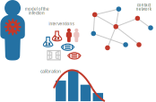
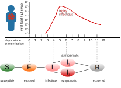

Agent-based simulations to assess the effectiveness of COVID-19 intervention measures
Graz University of Technology | Complexity Science Hub Vienna
Jana Lasser | jana.lasser@tugraz.at | @janalasser
Research questions
(1) Can outbreaks be controlled with (non-pharmaceutical) measures?
(2) What measures and measure combinations work best?
(3) How does the situation change with different virus variants?
Application scenarios
(1) Nursing homes: keeping inhabitants safe without vaccinations
Agent-based simulations for protecting nursing homes with prevention and vaccination strategies Lasser et al. (2021).
(2) Schools: different measures for different school types
Assessing the impact of SARS-CoV-2 prevention measures in schools by means of agent-based simulations calibrated to cluster tracing data Lasser et al. (2022).
(3) Universities (TU Graz): presence lectures during Omicron?
Assessment of the effectiveness of Omicron transmission mitigation strategies for European universities using an agent-based network model Lasser et al. (2022).
Why agent-based simulations?
Compartment models assume homogeneous distributions and attributes. The reality is often very heterogeneous in
Space
The number of contacts (node degree) is not uniform. Different agent types have different contact patterns. Example: employees and inhabitants in nursing homes.
Time
Contact patterns and measures vary in time. Example: students in school.
Agent attributes
A variety of attributes can differ between agents and crucially influence infection transmission. Example: vaccination status, age, epidemiological parameters, ...
Ingredients for agent based models of SARS-CoV-2
Ingredients for agent based models of SARS-CoV-2
Ingredients for agent based models of SARS-CoV-2
Ingredients for agent based models of SARS-CoV-2
Model of the infection
When is an agent infectious?
How infectious is an agent at a point in time?
When does an agent show symptoms?
Model of the infection
Walsh K. A., Jordan K., Clyne B., et al. SARS-CoV-2 detection, viral load and infectivity over the course of an infection: SARS-CoV-2 detection, viral load and infectivity. Journal of Infection (2020).
Model of the infection
Lasser, J. Small community SEIRX package v1.4.2. Python Package Index (2022).
Model of the infection
Lasser, J. Small community SEIRX package v1.4.2. Python Package Index (2022).
Model of the infection
Lasser, J. Small community SEIRX package v1.4.2. Python Package Index (2022).
Model of the infection
Lasser, J. Small community SEIRX package v1.4.2. Python Package Index (2022).
Model of the infection
Ferretti, L. et al. Quantifying SARS-COV-2 transmission suggests epidemic control with digital contact tracing. Science (2020).
Linton, M. N. et al. Incubation period and other epidemiological characteristics of 2019 novel coronavirus infections with right truncation: a statistical analysis of publicly available case data. Journal of Clinical Medicine (2020).
Lauer, S. A. et al. The incubation period of coronavirus disease 2019 (Covid-19) from publicly reported confirmed cases: estimation and application.. Annals of Internal Medicine (2020).
Model of the infection
Ferretti, L. et al. Quantifying SARS-COV-2 transmission suggests epidemic control with digital contact tracing. Science (2020).
Linton, M. N. et al. Incubation period and other epidemiological characteristics of 2019 novel coronavirus infections with right truncation: a statistical analysis of publicly available case data. Journal of Clinical Medicine (2020).
Lauer, S. A. et al. The incubation period of coronavirus disease 2019 (Covid-19) from publicly reported confirmed cases: estimation and application.. Annals of Internal Medicine (2020).
Contact networks
Which other agents does an agent meet?
When do the contacts occur?
How intense are the contacts?
Model of a nursing home
Model of a nursing home

Model of a nursing home

Model of a nursing home

Model of a nursing home
Model of a nursing home
Model of a nursing home
Model of a nursing home
Model of a nursing home
Model of a nursing home
Model of a primary school
Model of a primary school
Model of a primary school
Model of a primary school
Model of a primary school
Model of a secondary school

Contact types
| Interaction | Duration | Proximity | Type |
|---|---|---|---|
| household | very long | very close | household |
| table neighbours | long | close | K1 |
| teachers, long meeting | long | close | K1 |
| teaching, supervision | long | close | K1 |
| classmates, daycare mates | long | far | K2 |
| teachers, short meeting | short | close | K2 |
Model of TU Graz
Idea: use TU Graz online to re-construct the student contact network.
Model of TU Graz

Different contact networks
| application | agent types | number of agents | repository |
|---|---|---|---|
| nursing home | residents, employees | ~50 | https://osf.io/hyd4r/ |
| primary school | students, teachers | ~200 | https://osf.io/mde4k/ |
| secondary school | students, teachers | ~800 | https://osf.io/mde4k/ |
| university | students, lecturers | ~15.000 | https://osf.io/upx7r/ |
simulation of infection dynamics
simulation of infection dynamics
simulation of infection dynamics
How do we make sure that what we simulate reflects reality?
Calibration
Which are the free parameters in our model?
How do outbreaks look in reality?
Which parameter values reproduce the "real" outbreaks?
simulation of infection dynamics
Which mechanisms influence the transmission probability?
Transmission probability
[1] He et al. 2020 Temporal dynamics in viral shedding and transmissibility of Covid-19.
Transmission probability
[1] He et al. 2020 Temporal dynamics in viral shedding and transmissibility of Covid-19.
Transmission probability
[1] He et al. 2020 Temporal dynamics in viral shedding and transmissibility of Covid-19.
Transmission probability
[1] He et al. 2020 Temporal dynamics in viral shedding and transmissibility of Covid-19.
Transmission probability
[1] Byambasuren, O. et al. 2020 Estimating the extent of asymptomatic Covid-19 and its potential for community transmission: systematic review and metaanalysis.
Transmission probability
[1] He et al. 2020 Temporal dynamics in viral shedding and transmissibility of Covid-19.
Calibration of household SAR
[1] Madwell et al. 2020 Household Transmission of SARS-CoV-2 A Systematic Review and Meta-analysis.
Calibration of household SAR
[1] Madwell et al. 2020 Household Transmission of SARS-CoV-2 A Systematic Review and Meta-analysis.
Calibration of household SAR
[1] Madwell et al. 2020 Household Transmission of SARS-CoV-2 A Systematic Review and Meta-analysis.
Calibration of household SAR
[1] Madwell et al. 2020 Household Transmission of SARS-CoV-2 A Systematic Review and Meta-analysis.
Calibration of household SAR
[1] Madwell et al. 2020 Household Transmission of SARS-CoV-2 A Systematic Review and Meta-analysis.
Remaining free parameters
Empirical outbreak data

Circumstances at time of data collection:
no vaccinations, no masks, no testing, wild type virus.
Empirical outbreak data
Circumstances at time of data collection:
no vaccinations, no masks, no testing, wild type virus.
Empirical outbreak data
Circumstances at time of data collection:
no vaccinations, no masks, no testing, wild type virus.
Empirical outbreak data
Non-room contacts are 87% less likely to transmit an infection.
Tried to differentiate table & ward contacts: doesn't work.
Empirical outbreak data
Non-room contacts are 87% less likely to transmit an infection.
Tried to differentiate table & ward contacts: doesn't work.
No remaining free parameters
Intervention measures nursing homes
Aim: find an optimal testing strategy
Preventive testing: tests every X days, positive agents are isolated.
Vaccinations: reduce infection and transmission probability.
Nursing home: testing strategy
Nursing home: testing strategy
Nursing home: testing & vaccinations
Nursing home: testing & vaccinations
Nursing home: virus variants
school model
Additional model components
Infection dynamics involve children: age-dependence of transmission risk.
Additional measures: masks, room ventilation.
Calibration of the school model
Assumption: q2 = q3 = qage.
Model qage as linear decrease in infection risk for every year younger than 18.
Calibration of the school model
Assumption: q2 = q3 = qage.
Model qage as linear decrease in infection risk for every year younger than 18.
Calibration of the school model
Assumption: q2 = q3 = qage.
Model qage as linear decrease in infection risk for every year younger than 18.
The data
536 clusters* with 3342 cases recorded in Austrian schools between
2020-08-31 and 2020-11-02 collected by AGES.
| Age | School type | Clusters | Cases |
|---|---|---|---|
| < 10 years | primary | 67 | 286 |
| 10-15 years | lower secondary | 180 | 762 |
| > 15 years | upper secondary | 116 | 388 |
| > 10 years | secondary | 70 | 810 |
| otherwise | inconclusive | 103 | 1097 |
*"school cluster": at least two cases of which at least one transmission ocurred in a school context.
Data available at https://doi.org/10.5281/zenodo.4706876
Cluster size distributions
Clusters in secondary schools are much larger than in other school types.
Student case distributions
Ratio of asymptomatic cases*
*Follow-up to exclude initially pre-symptomatic cases.
Conditions in autumn 2020
Error term to optimize
Simulations for all school types:
(-) Draw source cases from known distribution of teachers and students.
(-) Use known age-dependence of asymptomatic courses.
(-) Simulate with known conditions at data collection time.
Error term to optimize
Simulations for all school types:
(-) Draw source cases from known distribution of teachers and students.
(-) Use known age-dependence of asymptomatic courses.
(-) Simulate with known conditions at data collection time.
Calibration of contact strength & age dependence
The minimum represents the optimal parameter combination.
Calibration of contact strength & age dependence
The minimum represents the optimal parameter combination.
Calibration of contact strength & age dependence
The location of the minimum is very noisy.
Calibration of contact strength & age dependence
Contact weight: 0.30 [0.26; 0.34].
Age dependence: -0.005 [-0.0225; 0.0] per year younger than 18.
Intervention measures schools
Aim: find optimal measure combinations
Preventive testing: teachers and/or students are tested 1x or 2x a week.
Cohorting: Only 50% of students are present, cohorts alternate.
Ventilation: Airing rooms for 10 min every hour.
Masks: teachers and/or students wear masks.
Results (delta)
Two measures are enough to prevent large outbreaks.
Results (delta)
Two measures are enough to prevent large outbreaks.
Results (delta)
Two measures are enough to prevent large outbreaks.
Results (delta)
Two measures on top of TTI are enough to prevent large outbreaks.
Results (delta)
Secondary schools need three measures on top of TTI or seasonal effects.
Comparison Delta vs. Omicron

Comparison Delta vs. Omicron

Intervention measures university
Is presence teaching feasible during Omicron?
Occupancy reduction: lecture halls are occupied to 25%, 50% or 100% (blue dots, green dots).
Masks: students and lecturers all wear masks (or don't wear masks).
Vaccination: Almost everybody is vaccinated but omicron evades immunity -> different vaccine effectiveness levels.
Results (omicron)
Results (omicron)
Results (omicron)
Results (omicron)
Reproduction number R
Reproduction number R
Reproduction number R
Reproduction number R
Summary of results
Agent-based simulations are useful when things are inhomogeneous.
Heterogeneous contact patterns.
Complex intervention scenarios.
Time variation in contact patterns and measures.
Empirical data is key to make sure simulations reflect reality.
Modelling choices should be informed by domain experts.
Contact networks should be empirically measured.
Simulation parameters have to be calibrated to empirical observations.
Agent-based simulations are good for systems with 10 - 100,000 agents. Larger systems become challenging.